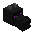
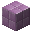

The End
O último desafio do Minecraft: o jeito mais fácil de derrotar o Dragão de Ender, passo a passo, e tudo o que dá para conseguir no End — com onde encontrar cada coisa.
Guia rápido: clique em um passo, em um item ou em um lugar
O caminho até o dragão
O que dá para conseguir no End
Os lugares do End
Arraste para o lado para ver todos →

Como derrotar o Dragão de EnderSeis passos, da preparação até a recompensa. Siga na ordem e o dragão cai.
O que dá para conseguir no End
Os itens que só existem lá (ou que lá são muito mais fáceis de conseguir), onde encontrar cada um e para que servem.

Os lugares do EndDa ilha do dragão às Cidades do End: o que tem em cada lugar, quem mora lá e o que vem nos baús.